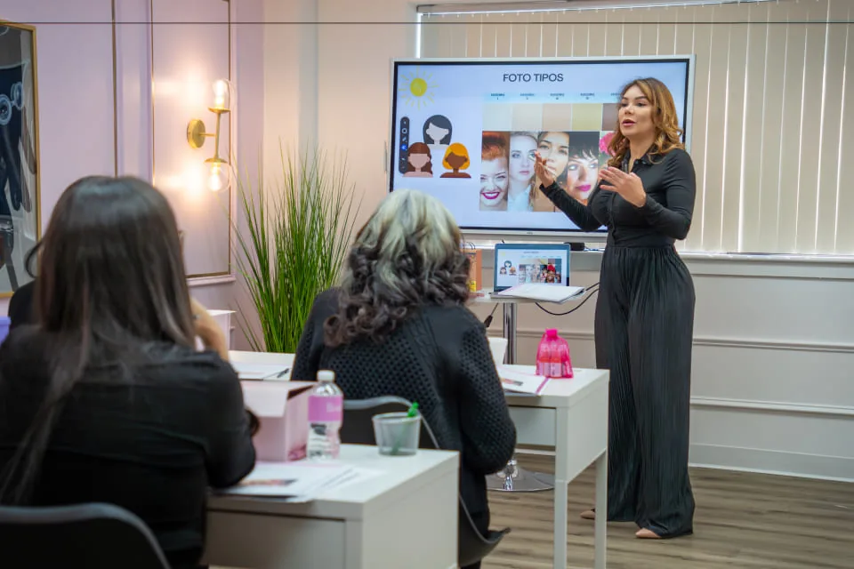
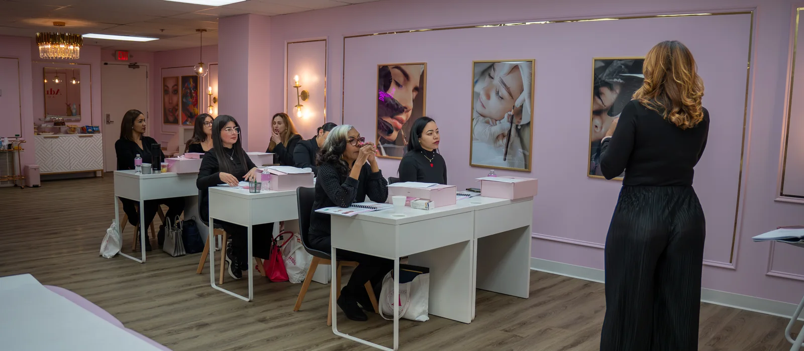

Techniques
- Microblading
- Ombre Shading
- Microshading
- Lip Blush
- Dark Lip Tone Neutralization
$7,000, or $15,400 with the 1-year apprenticeship
an in-house payment plan is available for this course. how it works
A nine-day, hands-on permanent makeup course in Peabody, Massachusetts. You learn five techniques on live models, leave with a full professional kit, and receive a certificate of completion accredited by the American Academy of Micropigmentation. Payment plans available, and you can review the entire class again after you finish.
Apply for the Next Class Call (781) 853-8063
The 100-Hour Fundamental Class includes 9 days of hands-on training in a small group, live-model practice, a full professional kit, and lifetime ongoing support after you finish, plus the right to retake the entire class later at no extra cost.

Nine days at the Peabody academy: theory, brow mapping and practice on live models, under supervision.


1 16
You learn five permanent makeup techniques from zero, the foundations behind them, skin anatomy, color theory, mapping and symmetry, and everything involved in working with real clients, from pre-care through consent forms and aftercare. The curriculum covers both the techniques and everything around them that a working artist needs on day one.
After the 100-hour class, most students who want to build a career continue into the 1-Year Apprenticeship, a separate program that covers the business side of permanent makeup and supervised live-model practice, since technique alone does not make a career.
It is built for artists who want to master the business behind permanent makeup as well as the craft. You practice on real models with a focus on natural, healed results, the outcome clients actually judge you on, months after the appointment. You learn how to position yourself and attract high-value clients rather than competing on price.
The apprenticeship also prepares you to apply for your PMU license, with hands-on training hours, the documentation you need, and professional guidance through the process.
The 100-Hour Fundamental Class costs $7,000, payable as a $1,500 deposit, $1,500 on day one, one payment of $700 fifteen days later, and five bi-weekly payments of $660. Bundled with the apprenticeship, tuition is $15,400 total, both payable through an in-house plan.
Paying for a course all at once is not always realistic when you are just starting out. Both programs can be split.
$7,000
$15,400
Training tuition uses this in-house payment plan. It is separate from the Cherry plans offered for permanent makeup services.
Adriana Souza Santos teaches the 100-Hour Fundamental Class herself. She has worked in the beauty industry for over 20 years, beginning her career in Brazil before opening her U.S. business in 2017, and holds Diamond Certified Trainer status with the American Academy of Micropigmentation, the academy’s highest level of instructor recognition.
She has trained more than 300 students and performed over 5,000 procedures.
Unpredictable healing is the most common reason new artists lose confidence: some strokes fade, others turn patchy, and it is hard to tell whether the cause was depth, pigment, or skin type. The course teaches the specific adjustments that make results consistent.
Skill alone does not fill a calendar. You learn to market yourself, attract high-value clients, and charge what the work is worth, instead of lowering prices to compete.
Cheap courses tend to skip the hands-on hours; expensive ones can feel like a gamble. This is an apprenticeship-style program, which means you finish it having already worked on real people under supervision.
No. A certificate of completion is not a license. Licensing is set by the state and town where you intend to work, and the requirements differ from place to place, meeting them is your own responsibility, and the academy can guide you but cannot issue, guarantee, or expedite a license.
Massachusetts has no single statewide body art license: M.G.L. Chapter 111, Section 31 gives each town’s Board of Health authority to write its own rules, so a permit in one Massachusetts town does not transfer to another. New Hampshire licenses at the state level under RSA 314-A, and the Town of Salem, NH additionally licenses under its own Chapter 433.
Check the specific licensing rules for the town or state where you plan to practice before enrolling: this certificate documents your training, not a license to work.
Adriana’s Academy is located at 39 Cross Street, Suite 206, Peabody, MA 01960, about 20 minutes from the Wilmington studio and 30 minutes from the Salem, NH studio. The academy trains students only; no client procedures are performed at this address.
39 Cross Street, Suite 206, Peabody, MA 01960
(781) 853-8063
Students come from across Greater Boston and southern New Hampshire.
No. The course teaches five techniques from zero, starting with skin anatomy and color theory before moving into hands-on practice.
Nine days total: 8 class days covering the five techniques and the foundations around them, plus 1 shadowing day in a working studio.
Only once you meet the licensing requirements of the town or state where you plan to work. A certificate of completion is not the same thing as a license, and meeting those requirements is your responsibility.
A full professional kit is included in the $7,000 tuition, so you leave the course with the equipment and supplies needed to start practicing.
Yes. Graduates can review the entire class again at any time after completion, at no extra cost.
The 100-Hour Fundamental costs $7,000 and runs over 9 days in Peabody, MA. It covers five techniques, microblading, ombré shading, microshading, lip blush and dark lip neutralization, with practice on live models under supervision, and it carries certification from the American Academy of Micropigmentation.
Yes. Tuition can be split through our in-house payment plan (a deposit, then scheduled payments). Cherry covers permanent makeup services, not courses. The VIP Masterclass also has an in-house plan.
Certification and licence are different things. The course gives you an AAM-accredited certificate; the licence to practise is issued by government. Massachusetts licenses body art town by town through each Board of Health, while New Hampshire licenses at state level under RSA 314-A. You apply where you intend to work.
Adriana Souza Santos, AAM Diamond Certified Trainer, which is the American Academy of Micropigmentation’s highest level of instructor recognition. She has performed more than 5,000 procedures across 20+ years and has trained over 300 students. Classes are taught in English and in Portuguese.
All training happens at Adriana’s Academy, 39 Cross Street, Suite 206, Peabody, MA. That address is the training division and serves students only, no client procedures are performed there. Client appointments stay at the Wilmington, MA and Salem, NH studios.
Class sizes are small and seats are limited. Tell us which start date you are aiming for and we will walk you through the plan that fits.
Apply for the Next Class Call (781) 853-8063This is for you if you are starting from zero and want a structured, accredited foundation across five techniques in 9 days.
It is not for you if you already take clients and need to fix one specific technique, the VIP Masterclass is built for that case.
Six things are worth verifying with any permanent makeup school: who actually teaches, whether the certificate is accredited, whether it licenses you to work, how much live-model practice you get, what the price covers, and where the training happens.
| What to check | What to ask any school | The answer here |
|---|---|---|
| Who is actually teaching | Ask for the instructor’s name and credential, not the school’s. Many schools sell a brand and hand the class to someone else. | Adriana Souza Santos teaches, and holds AAM Diamond Certified Trainer status, the American Academy of Micropigmentation’s highest instructor level, with 5,000+ procedures and 300+ students trained. |
| Whether the certificate is accredited | Ask which body accredits the certificate, and confirm that body exists and recognises the school. | The 100-Hour Fundamental is accredited by the American Academy of Micropigmentation. |
| Certificate against licence | Ask whether the certificate lets you work legally. A school that lets you believe it does is selling you a problem. | It does not, and that is stated plainly here: the certificate is training. The licence to practise is issued by government, town by town in Massachusetts, at state level in New Hampshire under RSA 314-A. |
| Hands-on practice on live models | Ask how many live models you work on, and who supervises while you do. | The 100-Hour Fundamental is 9 days with practice on live models under supervision; the apprenticeship is a year of supervised practice at $700 a month. |
| What the price covers | Ask for the total, and what is not in it. | $7,000 for the 100-Hour Fundamental, $700 a month for the apprenticeship. The VIP Masterclass is quoted per student because the scope changes. Tuition can be split through our in-house payment plan (a deposit, then scheduled payments); Cherry covers permanent makeup services, not courses. |
| Where the training happens | Ask for the training address, and whether clients are treated in the same room. | All training is at 39 Cross Street, Suite 206, Peabody, MA, students only. Client procedures happen at the Wilmington and Salem studios, never at the academy. |